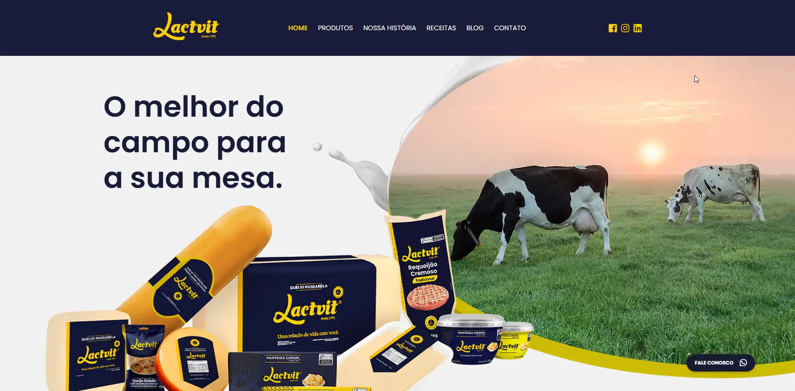
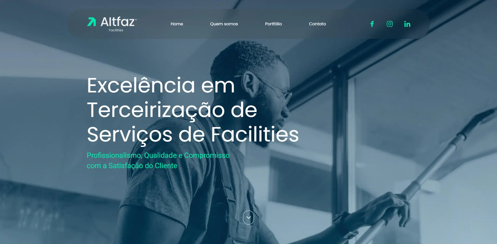
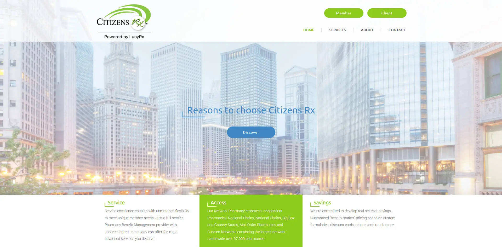
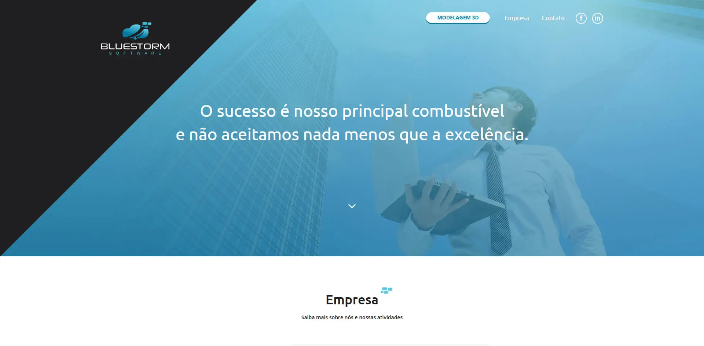
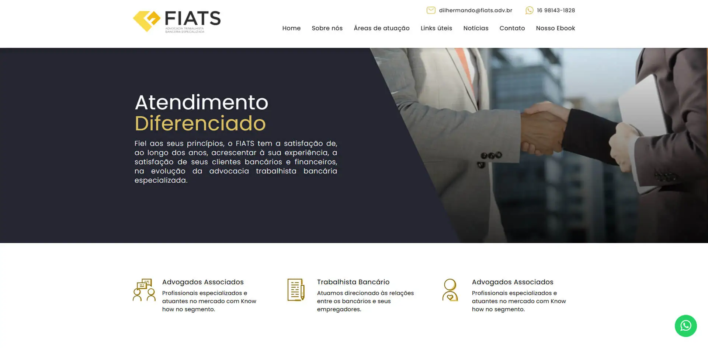
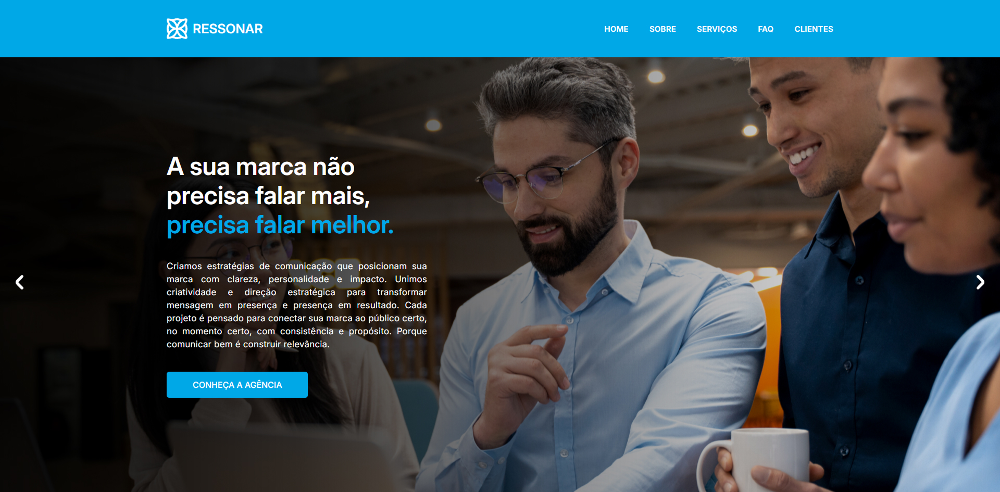

Markus Domenegheti, WordPress Developer and Web Designer
-Development and maintenance of WordPress websites and landing pages for clients across a range of industries, including exclusively custom-built WordPress projects developed with and without Elementor Pro and Advanced Custom Fields (ACF), implementation of JavaScript-based features, integration with external services, performance optimisation and troubleshooting, as well as the creation, update and continuous improvement of websites through the application of SEO and responsive design best practices, with a focus on usability, user experience, technical quality and overall project performance, contributing to projects with clearly defined objectives and measurable outcomes and long-term business growth.

Front-end development in WordPress using a custom theme, built without Elementor and focused on performance and scalability. The project includes a product showcase, recipes, and a blog with dynamic loading through the WordPress API, along with integrations with Swiper, Contact Form 7, and Advanced Custom Fields (ACF).
Open Live Site
Front-end development in WordPress using Elementor to streamline both the build process and ongoing maintenance. With a minimal design, the solution integrates JetEngine for dynamic content and JetFormBuilder for advanced forms, delivering flexibility and a smooth browsing experience.
Open Live SiteWordPress application development with Elementor, focused on interaction and conversion. The project includes a custom quiz with dynamic answer validation, JavaScript-based business rules, lead capture, and automatic PDF certificate generation at the end of the experience.

Layout design and front-end development in React for a modern application with smooth navigation and no page reloads. The project includes AWS environment integrations and CAPTCHA protection, ensuring performance, security, and an optimized user experience.
Open Live Site
Layout design and front-end development for a corporate website built without a CMS, prioritizing lightweight code, performance, and full control over the structure. The project features a minimal design focused on a clear, modern browsing experience aligned with the brand identity.
Open Live Site
Layout design, visual icon system definition, and front-end development in WordPress with Elementor. The project integrates the WordPress API, Swiper for carousels, and Advanced Custom Fields (ACF) for custom content management, combining flexibility and performance.
Open Live Site
Layout design and front-end development for a corporate website with public source code, built without a CMS. The project follows a minimal approach and includes Swiper integration for dynamic content presentation, creating a modern and efficient experience across different devices.
Open Live Site